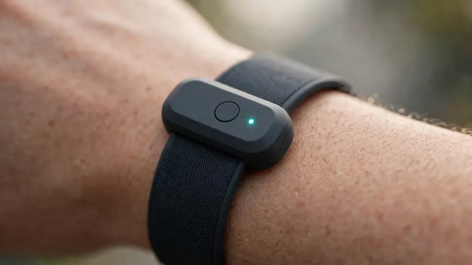
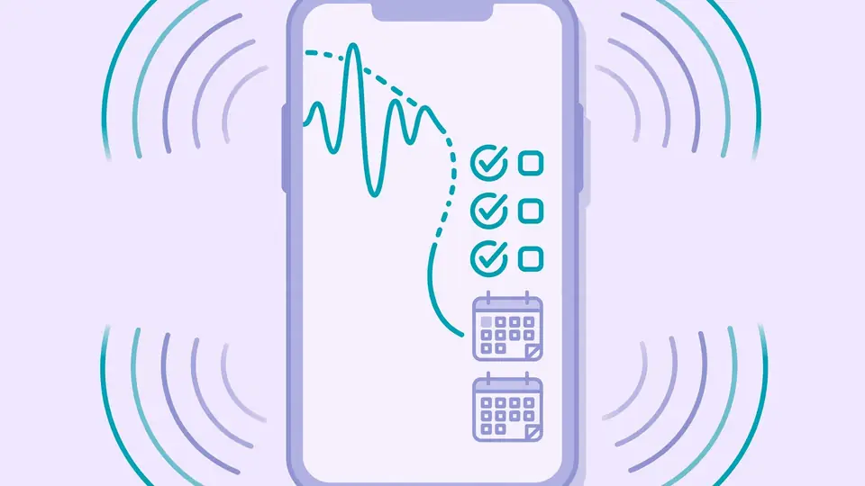

Amazon's Bee ships the $74.99 Frontier and $99.99 Eclipse: its first AI hardware since the acquisition
Bee, the AI wearable startup Amazon acquired last year, announced Thursday its first new hardware under Amazon ownership: the $74.99 Bee Frontier, a wristband or clip-on that turns everyday conversation into summaries, to-dos and calendar invites, and the $99.99 Bee Eclipse, a credit-card-sized recorder that magnetically snaps to the back of a smartphone. The Frontier is on sale now on Amazon; the Eclipse ships soon. Most striking is an opt-in extra: link your Bee account to Amazon.com and passing remarks — “we're out of dish soap” — become product recommendations on the site and in the app.
- Frontier: second generation of Bee's always-listening band — seven-day battery, USB-C charging, dual microphones with noise filtering, IP67 rating, colors Onyx, Lavender, Sage; on sale now on Amazon.
- Eclipse: phone-back attachment with a 21-day battery in Silver, Midnight, Honey and Blush; ships soon; prompts users to get permission from call participants each time recording begins.
- Both listen to your day and hand it back structured: conversation summaries, recaps, suggested to-dos, daily memory briefings, calendar invites, lecture notes.
- Pricing undercuts incumbents: $74.99 vs the $159 Plaud Note and Pocket's $129. The free tier gets conversation summaries with 14 days of memory; the $11.99/month Bee Pro tier adds unlimited summaries plus Amazon.com, Alexa+ and third-party integrations.
- Opt-in “shopping ear”: link your Bee account to Amazon.com and offhand remarks (“we're out of dish soap”) become product recommendations on Amazon.com and in the Bee apps; Bee says it won't share data with Amazon without consent.
- Privacy architecture: raw audio processed in real time then deleted, never stored; transcripts encrypted with keys your device creates and controls; one-button on/off, an indicator light when summarizing, and everything deletable at any time.
- Integrations: Gmail, Google Calendar, Microsoft Outlook, Apple HealthKit, uploaded photos; you can ask Alexa+ about things Bee captured, hands-free.
Two devices, one playbook
The Frontier is the second generation of Bee's original always-listening band. It keeps the seven-day battery life and USB-C charging of its predecessor and adds dual microphones with noise filtering, an IP67 dust-and-water rating, and a smaller, lighter chassis in Onyx, Lavender and Sage, according to GeekWire. The Eclipse is the non-wearable option: a phone-back attachment with a 21-day battery, meant for more professional settings, in Silver, Midnight, Honey and Blush.
Both do the same job. They listen to your day and hand it back structured: conversation summaries, recaps, suggested to-dos, daily memory briefings. Mention plans with a friend and Bee drafts the calendar invite. Sit through a lecture and you get the notes. Leave the doctor's office and you have the care plan written down. Integrations with Gmail, Google Calendar, Microsoft Outlook, Apple HealthKit and uploaded photos let it draft emails, set up meetings and surface action items — and you can even ask Alexa+ about things Bee has captured, hands-free.

The undercut
Bee is pricing like a scale business, not a startup novelty. At $74.99, the Frontier costs less than half of the $159 Plaud Note — the current incumbent in conversation capture — and undercuts Pocket's $129 device too, as TechCrunch noted. The free tier gets you conversation summaries and recaps with 14 days of memory; the $11.99-a-month Bee Pro tier adds unlimited summaries plus the Amazon.com, Alexa+ and third-party integrations.
That pricing is the tell. Plaud built a profitable niche selling premium note-takers to knowledge workers. Amazon — which bought Bee in July 2025 for an undisclosed sum, per GeekWire — is going for volume, timed just ahead of the holiday shopping season.
The shopping ear
The feature everyone will talk about is opt-in, and Amazon is saying so loudly. Connect your Bee account to Amazon.com and your offhand remarks start turning into product recommendations: mention you're out of dish soap, and the suggestion shows up on Amazon.com and in the Bee mobile and desktop apps. GeekWire reports the feature is voluntary — it won't happen unless you choose it, and Bee says it won't share your data with Amazon without consent.

The privacy pitch
An always-listening device from Amazon will get the side-eye, and Bee's answer is architecture: a "private computing" setup where raw audio is processed in real time and then deleted, never stored. Transcripts are encrypted with keys your own device creates and controls, so nobody — including Amazon employees — can read them unless you deliberately share. A one-button on/off and an indicator light that shows when the device is summarizing are the physical safeguards; Eclipse goes further by prompting you to get permission from call participants each time recording begins.
You can also optionally let an Echo's Voice ID identify your voice so Alexa can record conversations for Bee's insights. Everything — transcripts and summaries — can be deleted at any time. The open question, as ever with Amazon's AI stack, is trust: the technical guarantees look serious, but the business model now visibly includes selling you dish soap mid-conversation. The opt-in is doing a lot of heavy lifting.
What it means
The personal-AI-gadget graveyard is full — Humane's AI Pin, the Rabbit R1 — but Bee is playing a different game: not a new computer, just a note-taker that never misses, sold cheap and plugged into the world's biggest store. The first hardware refresh since the acquisition, a redesigned companion app plus a new desktop app, and aggressive underpricing all point one way: Amazon wants the always-listening wearable to be a commodity before anyone else can own the category.
Sources: TechCrunch: Amazon's Bee launches two new personal AI devices, starting at $75 (Oct 15); GeekWire: Amazon's new AI devices can listen to conversations and suggest things to buy — if you opt in (Oct 15).
Frequently asked questions
What are the Bee Frontier and Eclipse?
Amazon-owned Bee's first AI hardware: the $74.99 Frontier wristband/clip-on (7-day battery) and the $99.99 Eclipse phone-back recorder (21-day battery). Both turn ambient conversation into summaries, to-dos, calendar invites and daily memory briefings.
Does Bee send my conversations to Amazon?
Not by default. Raw audio is processed in real time and deleted; transcripts are encrypted with keys your own device creates and controls. The feature that links remarks to Amazon.com product recommendations is opt-in and won't happen unless you choose it.
How much does Bee cost to run?
The free tier gets conversation summaries and recaps with 14 days of memory; Bee Pro costs $11.99 a month and adds unlimited summaries plus Amazon.com, Alexa+ and third-party integrations.